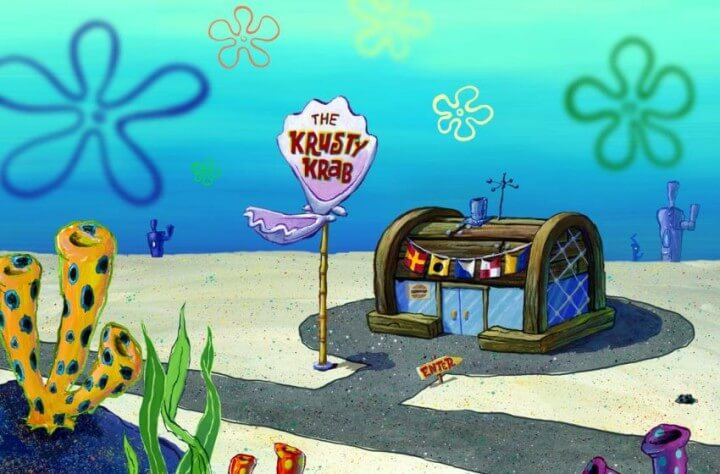

The Krusty Krab
The Krusty Krab is a fast food restaurant located in Bikini Bottom, founded and owned by Eugene H. Krabs. It is also the most popular and best known restaurant in Bikini Bottom and one of the main locations of SpongeBob SquarePants. It first appears in the pilot episode "Help Wanted."
Famous for its Krabby Patty burgers, it is a rival to Plankton's highly unpopular across-the-street restaurant called the Chum Bucket. Its employees are SpongeBob SquarePants and Squidward Tentacles, respectively the fry cook and cashier.
